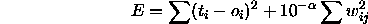
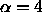

The implementation of Rprop has been changed in two ways: First, the
implementation now follows a slightly modified adaptation
scheme. Essentially, the backtracking step is no longer performed, if
a jump over a minimum occurred. Second, a weight-decay term is
introduced. The weight-decay parameter  (the third learning
parameter) determines the relationship of two goals, namely to reduce
the output error (the standard goal) and to reduce the size of the
weights (to improve generalization). The composite error function is:
(the third learning
parameter) determines the relationship of two goals, namely to reduce
the output error (the standard goal) and to reduce the size of the
weights (to improve generalization). The composite error function is:

Important: Please note that the weight decay parameter  denotes the exponent, to allow comfortable input of very small
weight-decay. A choice of the third learning parameter
denotes the exponent, to allow comfortable input of very small
weight-decay. A choice of the third learning parameter

corresponds to a ratio of weight decay term to output error of .
.